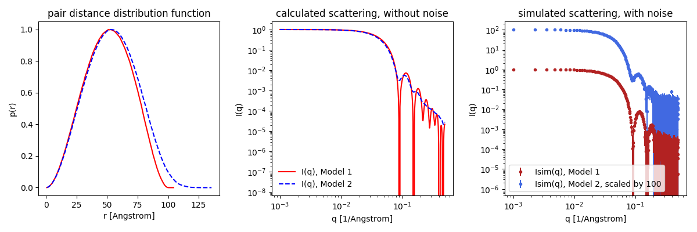

Home
Tutorial: Polydispersity
Contributors: Andreas Haahr Larsen, Martin Cramer Pedersen, Jeppe Breum Jacobsen.

Polydisperse silica nanoparticles (NP). Reprinted from Pauw et al., 2023, with permission.
Before you start
- Download and install SasView (on MacOS: you need to install Xcode first).
- Download and install McSAS.
- Basic knowledge of fitting in SasView with inclusion of polydispersity is assumed, e.g. from the Spheres tutorial.
Learning outcomes
Learn to analyse polydisperse samples with SAXS, including normal distributions, multimodal size distributions, or free-form distributions.- Distinguish a sample of polydisperse spheres from a sample of monodisperse spheres.
- Be able to fit a sphere in SasView and determine its size, and size distribution if it is polydisperse.
- Model size distributions in SasView, including multimodal size distributions.
- Model free-form size distribution in McSAS.
Introductory remarks
Many samples are highly polydisperse, meaning they contain particles that vary in size. This distribution of sizes may be described by a size distribution in one or more structural parameters. The simplest case is a sample of spheres, with a normally distributed radii. However, here you will also deal with more complex size distributions, including the use of McSAS, a software package for extracting free-form size distributions from SAXS (or SANS) data.
Part I: Fit polydispere spheres in SasView
To see the effect of polydispersity, go to Shape2SAS, and simulate a sphere with a radius of 50 Å as Model 1 (monodisperse sample) and a sphere with radius of 50 Å and relative polydispersity of 0.1 as Model 2 (polydisperse sample).
Notice that the features (minima, oscillations) are "smeared out" in the polydisperse sample. This is because we see the sum of scattering contributions from spheres having slightly different size, and therefore different positions of the minima. Note that larger polydispersity gives more smearing.
Try also to compare the scattering from polydisperse spheres with that of ellipsoid with semiaxes a = 50 Å, b = 40 Å, c = 60 Å, notice that the ellipsoidality also smears the scattering features, as the ellipsoid looks different from various angles (in contrast to a perfect sphere).
A Gaussian (normal) size distribution is used to simulate polydispersity in Shape2SAS (Larsen et al, 2023), but many different size distributions are possible in real samples (Pauw et al., 2013).
Now, try to fit the data. Load your data (or this example data) into SasView and model the polydispersity. You need some extra steps, besides those you did in Part I
- Adding polydispersity in SasView
- Load the data as described in the Spheres tutorial and choose the sphere model. Try to fit the data with a monodisperse sphere model first.
- Click the "Polydispersity" option in the lower left corner of the Fit panel.
- Click the (now active) "polydispersity" tab in the Fit Panel. Check the box "Distribution of radius". Give a non-zero number as default for the polydispersity (PD).
- Choose distribution on the right side. Default is Gaussian (a normal distribution), which is fine for this example, but other distributions can be chosen. The size distributions in SasView are number-weighted - as opposed to e.g. volume-weighted distributions, which will give different results (Pauw et al., 2023).
- Press fit
- Besides from the fit to data, residuals, and convergence, you also get a window with the fitted distribution of radii of spheres in the sample. By default it plots on log-log. If you right-click, choose and change scale to x and y (instead of logarithmic), you may recognize a normal distribution for the radius (example of output distribution).
Part II: Form-free size distribution (McSAS)
Instead of defining a specific model for the polydispersity (such as Gaussian or lognormal) and optimizing its parameters, we can use a form-free size distribution. A form-free distribution is not constrained by any predefined mathematical function, allowing it to take any shape. The program McSAS uses a Monte Carlo method to extract a discrete size distribution from the SAS data.
To use McSAS, you need to install it first. The easiest way to do this is to go to the McSAS Github page and download the latest release for the either Windows, MacOs, or Linux. After downloading, unzip the folder and run the McSAS.exe file. You should see a small window like the one below on the left. As an example, use the Shape2SAS model 2 from Part 1 (50 Å spheres, 0.1 polydispersity). Before pressing "start", make sure the "Sphere radius" under the "Model" tab is a reasonable interval. Don't press the "Activate" button. After pressing start, it should only take about a minute.
- Notes on using McSAS
- McSAS can only accept data in $(q, I(q), \Delta I(q))$ format, this is the "with errors" format on Shape2SAS.
- McSAS might indicate an incorrect number of data points; however, this can be safely ignored.
- Note that McSAS uses $\text{nm}$ and $\text{nm}^{-1}$ units instead of $\text{Å}$ and $\text{Å}^{-1}$. This difference can be ignored. As long as the uploaded data is in $\text{Å}^{-1}$, the output distribution will be in $\text{Å}$.
After a run is finished you should see a window like the one above on the right. It shows the original $I(q)$ against the obtained fit. Additionally, it shows a size distribution. In this example, it shows the distribution of sphere radii.
- Question: why is the distribution not "perfect" when the data was simulated?
Importantly, McSAS will almost always produce a good fit to your data regardless of the model used. For this reason it is important to choose an appropriate model, and be extra critical of the output.
For a more in-depth tutorial, see the Read the Docs of McSAS.
Part III: Multimodal size distribution (SasView/McSAS)
coming autumn 2024...Challenges
- Challenge 1: You have measured a sample of silver nanoparticles (SAXS data). Estimate their approximate size (distribution).
- Challenge 2: You have measured a sample of spherical silica nanoparticles (SAXS data). Estimate their approximate size (distribution).
- Challenge 3: You have measured a sample of polydisperse gold particles (SAXS data).
- Try to fit the data using Sasview. Use a spherical model with lognormal polydispersity. Is the fit good?
- Now use McSAS to fit the same data. Set the model to "spheres" and the radius distribution to 0 - 100. Could you have captured this size distribution in Sasview?
Help and feedback
Help us improve the tutorials by- Reporting issues and bugs via our GitHub page. This could be typos, dead links etc., but also insufficient information or unclear instructions.
- Suggesting new tutorials/additions/improvements in the SAStutorials forum.
- Posting or answering questions in the SAStutorials forum.